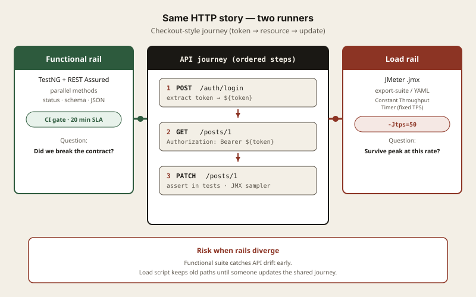
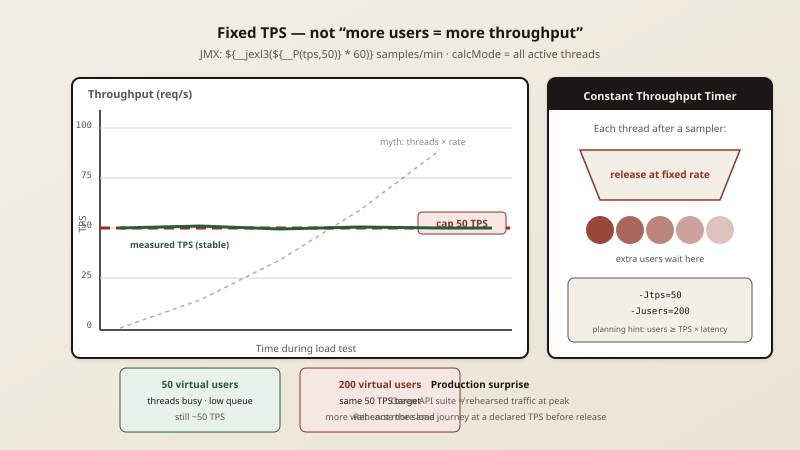
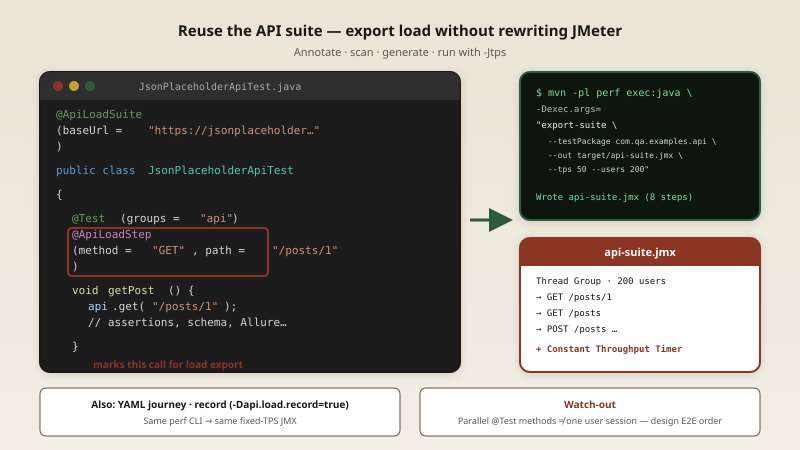

One API Suite, Two Rails: Functional Tests That Feed Load
The release pipeline is green. The API suite passed in parallel. An hour later, production is slow under traffic nobody rehearsed. The team did not miss a test. They missed a second question: did we ever stress the same journey at a fixed rate?
That question is old. What changed is the cost of keeping two separate worlds—functional API tests in one repo, load scripts in another—when both describe the same HTTP surface.
The disguise
It looks like discipline to maintain a dedicated load team and a dedicated automation team. Each group has its own tools, its own heroes, its own sprint leftovers. Functional tests prove correctness. Load tests prove capacity. On paper, that split is clean.
In practice, the load script is a photocopy of the API suite that started true in January and lies by March. Endpoints move. Auth headers change. A query parameter becomes required. The functional suite catches the drift. The load suite still hits 200 on a mock until someone notices the graph flatlined.
The disguise is progress without a single owner for the HTTP contract.

The old habit at human speed
When releases were weekly and APIs were small, you could afford duplicate effort. An engineer wrote TestNG methods with REST Assured. Another exported Postman or wrote JMeter by hand. The duplication hurt, but the blast radius was contained.
The functional suite answered: does this change break a contract? The load suite answered: can we survive peak traffic? Different questions. Different artifacts. Survivable.
Why it breaks now
APIs are graphs, not lists. Login returns a token. The token gates the next call. Create returns an id. Update uses that id. Functional tests encode that graph with assertions. Load tests need the same graph at volume, or they measure noise.
Parallel functional tests are not a journey. Running every @Test method in parallel finishes the suite quickly. That is a win for the release pipeline. It is not a user session. Exporting those methods as independent samplers fires unrelated endpoints at once.
Record-only load drifts with test order. Recording HTTP during a functional run is seductive. Flip a flag, run the suite, emit YAML. If tests are isolated per method, you get a shuffle of calls, not a checkout flow.
Hand-written YAML journeys do not track the suite. A curated journey file is clear and reviewable. It is also another file to maintain when the API team ships without updating it.

Two rails on one bridge
The Hybrid Framework treats API automation as one asset with two execution modes.
Rail one — functional: TestNG, REST Assured, parallel methods, Allure evidence. This is the release gate.
Rail two — load: The same HTTP steps compiled to JMeter .jmx with a Constant Throughput Timer and JEXL so -Jtps=50 means fifty transactions per second, not fifty times thread count. Extra users wait. They do not inflate throughput.
You can author the journey three ways: YAML files, @ApiLoadStep annotations on existing tests (export-suite CLI), or record during a functional run then refine YAML.

Pros and cons
- Separate JMeter scripts: High effort, high realism if maintained, poor sync with API tests.
- YAML journey only: Clear E2E, medium sync unless review enforces updates.
- @ApiLoadStep export: Low effort, stays close to Java tests; static order unless you design for E2E.
- Record + refine: Fast capture; needs curation for real journeys and data hygiene.
Who owns what
Mechanism belongs to the framework: export CLI, JMX generation, throughput timer math, warnings when thread count cannot sustain TPS.
Outcome belongs to leadership. If pull requests that touch API tests must update annotations or journey YAML, the bridge holds.
Bottom line
You do not need two unrelated suites to answer correctness and capacity. You need one HTTP story, two runners, and a fixed throughput contract that does not lie when managers add virtual users.
Who on your team owns the journey file when the API changes—and what happens to load the week they forget?
Try it
The framework is open source on GitHub. Clone the repo, run the API examples, and export a load plan from the same suite:
git clone https://github.com/shreenivash/HybridFramework.git
cd HybridFramework
mvn -B -DskipTests install
mvn -pl examples test
mvn -q -pl examples,perf -am install -DskipTests
mvn -q -pl perf exec:java -Dexec.args="export-suite \
--testPackage com.qa.examples.api --groups api \
--baseUrl https://jsonplaceholder.typicode.com \
--out target/api-suite.jmx --tps 50 --users 200"